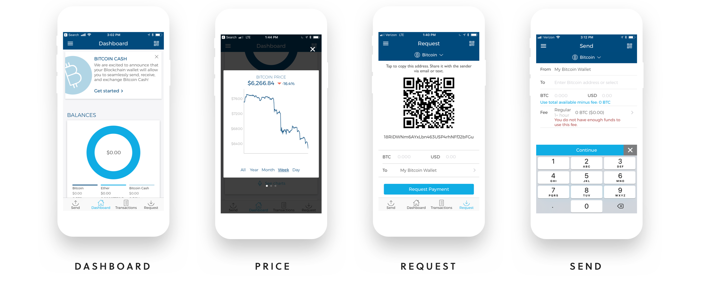
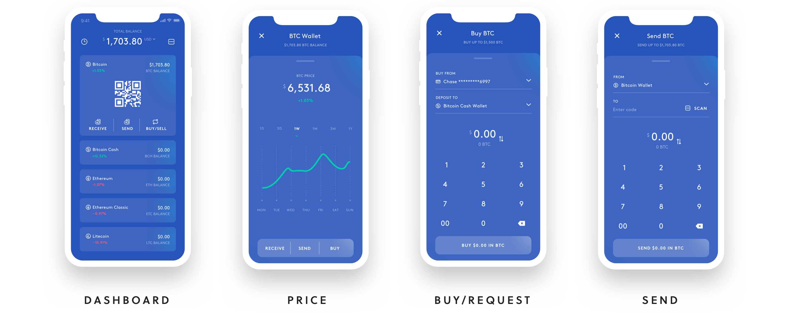

Reimagining the Blockchain Wallet
Blockchain is one of the world’s most popular digital wallets for storing Bitcoin, Bitcoin Cash and Ether. To better familiarlize myself with the cryptocurrency space, I've reimagined their iOS app to include two exciting new cryptocurrencies — Ethereum Classic and Litecoin.
The Challenge
My task is to add two new cryptocurrencies. My goal is to drive adoption of the new coins by improving the ease of buying and receiving coins.
Existing Product
Before I begin my task — I'll need to experience the current process first hand. Upon installing the Blockchain app, I'm greeted with a dashboard that displays a total balance of $0 USD. A navigation bar at the bottom provides shortcuts to send or receive coins. I tap the send button, but that appears to be a dead end. I decided to tap the request button. I see "request bitcoin" across the top along with a QR code and input for the total amount. I'm really not sure what I'm supposed to to from here. Feeling a bit frustrated, I set my phone down.

Ater carefully studying the process, I've discovered a few opportunities. First, there's no shortcut to request individual currencies — a potential roadblock. Second, I don't see any way to buy coins. I'll need to receive coins from another wallet to get started. In order to do that, I'll need someone's Bitcoin wallet address. Did you know that a Bitcoin wallet address is a string of 34 characters and numbers?
The Solution
Feeling inspired, I decide to redesign the dashboard to display the new currencies, reorganizing the app in the process. By organizing the dashboard by currency I can display contextually relevant information and actions for each coin. The restructuring also allows me to reduce clutter by displaying the "send" button in the appropriate context — when a wallet holds coins. Adding a prominent and clear "buy" call-to-action should increase adoption of the new coins.

The Dashboard
Visually, I've chosen a flat skeuomorphic style. The wallet (a familiar concept to most) is used as a visual metaphor. I've avoided the representation of currencies as physical credit cards. Cryptocurrencies are something much different! The QR code is prominently displayed on each card to allow accessibility for customers scanning within close physical proximity. This should further help achieve the goal of reduced friction - allowing customers, both online and off to buy and receive new currencies in just a few steps.

Live Pricing
Many customers may be hesitant to adopt new cryptocurrencies, due in part to their volatile nature. Price fluctuations could instantly offset any cost benefit of transacting with them. I've moved the pricing information from the dashboard to display in context when needed — before the customer buys.

Transaction History
Users today are accustomed to instantaneous feedback. Due to the process of validation and confirmation on a blockchain network, confirming a transaction can take much longer. Providing instant feedback (especially while a transaction is pending) will be an integral step gaining a users trust. With instant notifications, customers will be at ease knowing the status of a transaction at any given time. This should help drive adoption of additional coins.

What's next?
Cryptocurrencies will continue to provide immense value for customers, if we can rise to the challenge of introducing this transformational new technology. Reducing unnecessary friction by leveraging existing conventions and mental models will go a long way toward achieving that goal. As a next step - let's test this hypothesis with customers to begin the process of creating a solution that reaches that goal. Thanks for watching!